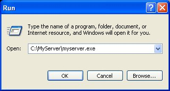

You can run myServer under Windows
98, NT and XP in two ways:
1. You can
run the myserver.exe command from the start menu
a. Open Start Menu
b. Click on Run
c. Type in
C:\MyServer\myserver.exe

Running the program
from the Start Menu